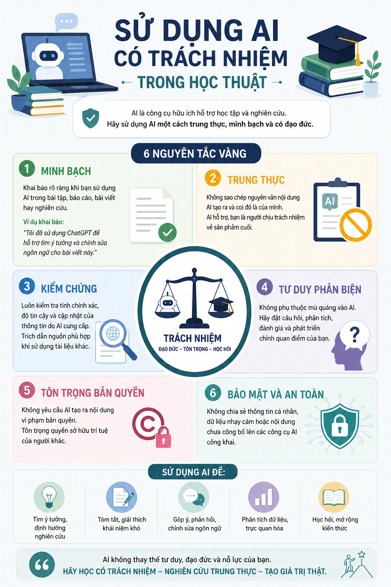

TRƯỜNG ĐẠI HỌC CÔNG NGHỆ-ĐẠI HỌC QUỐC GIA HÀ NỘI
KHOA: CÔNG NGHỆ THÔNG TIN
BÁO CÁO BÀI TẬP: SỬ DỤNG AI CÓ TRÁCH NHIỆM VÀ ĐẠO ĐỨC TRONG HỌC TẬP
- Họ và tên sinh viên: Cao Doãn Lợi
- Mã số sinh viên: 25020249
- Nhiệm vụ lựa chọn: Viết bài luận
I. Nghiên cứu chính sách của trường đại học về việc sử dụng AI
1. Tóm tắt chính sách (Ví dụ áp dụng theo định hướng của Đại học Quốc gia Hà Nội): Hiện nay, nhiều trường đại học lớn tại Việt Nam đã bắt đầu ban hành hướng dẫn về Trí tuệ nhân tạo. Nhìn chung, chính sách nhấn mạnh vào Liêm chính học thuật (Academic Integrity):
- Điểm cho phép: Sinh viên được khuyến khích sử dụng AI (như ChatGPT, Gemini) như một công cụ hỗ trợ để: Tìm kiếm ý tưởng (brainstorming), lập dàn ý, tóm tắt tài liệu tham khảo, và kiểm tra lỗi ngữ pháp/chính tả.
- Điểm cấm kỵ: Nghiêm cấm việc sử dụng AI để tạo ra toàn bộ hoặc một phần đáng kể nội dung bài nộp mà không có sự chỉnh sửa, đóng góp trí tuệ cá nhân, hoặc sao chép nguyên văn đầu ra của AI và nhận là tác phẩm của mình (được xem là hành vi đạo văn).
- Yêu cầu bắt buộc: Mọi sự hỗ trợ từ AI đều phải được minh bạch hóa và trích dẫn rõ ràng trong bài làm.
2. Phân tích và Nhận định cá nhân: Chính sách này hoàn toàn hợp lý và có tính cập nhật cao. Thay vì cấm đoán cực đoan (điều gần như bất khả thi và cản trở sự tiến bộ), nhà trường chọn cách "quản lý và định hướng". So với các chính sách khắt khe của một số trường trên thế giới thời kỳ đầu (cấm hoàn toàn), chính sách này thể hiện sự cởi mở, xem AI như một "trợ lý học tập". Tuy nhiên, thách thức lớn nhất là làm sao giảng viên có thể kiểm chứng được ranh giới giữa việc "tham khảo" và "lạm dụng" của sinh viên.
II. Thực hiện nhiệm vụ học tập với sự hỗ trợ của AI (Viết bài luận)
1. Thông tin bài luận:
- Chủ đề bài luận: Tác động của Trí tuệ nhân tạo đối với phương pháp tự học của sinh viên đại học.
2. Quá trình sử dụng AI (Công cụ sử dụng: Google Gemini / ChatGPT):
- Bước 1: Tìm kiếm ý tưởng và lập dàn ý (Brainstorming)
- Prompt đã sử dụng: "Đóng vai một chuyên gia giáo dục, hãy lập cho tôi một dàn ý chi tiết cho bài luận dài 1500 chữ về chủ đề: Tác động của AI đối với phương pháp tự học của sinh viên đại học. Yêu cầu có đủ Mở bài, Thân bài (3 luận điểm chính về lợi ích, 2 luận điểm về rủi ro) và Kết luận."
- Đầu ra của AI (Tóm tắt): AI cung cấp một dàn ý rất logic. Các lợi ích gồm: Cá nhân hóa lộ trình học, giải đáp thắc mắc 24/7, tổng hợp tài liệu nhanh. Các rủi ro gồm: Lệ thuộc công cụ làm giảm tư duy phản biện, rủi ro sai lệch thông tin (hallucination).
- Đánh giá & Chỉnh sửa: Tôi nhận thấy luận điểm "Cá nhân hóa lộ trình" hơi vĩ mô đối với cá nhân sinh viên, nên tôi đã tự đổi thành "Cải thiện kỹ năng quản lý thời gian và lập kế hoạch học tập".
- Bước 2: Triển khai nội dung (Drafting)
- Prompt đã sử dụng: "Dựa vào luận điểm: 'AI làm giảm tư duy phản biện của sinh viên', hãy viết một đoạn văn phân tích khoảng 200 chữ, đưa ra ví dụ cụ thể về việc sinh viên copy-paste đáp án mà không kiểm chứng."
- Đầu ra của AI: AI viết một đoạn văn khá mượt mà, lập luận rằng sinh viên dễ dãi chấp nhận thông tin từ chatbot, dẫn đến "teo cơ" tư duy. Ví dụ đưa ra là việc sinh viên dùng AI viết code mà không hiểu logic căn bản.
- Tích hợp đầu ra: Tôi KHÔNG copy nguyên văn đoạn này. Tôi lấy cấu trúc lập luận của AI, sau đó tự viết lại bằng văn phong của mình, thay đổi ví dụ về viết code thành ví dụ về "sinh viên khối C trích dẫn sai nguồn sử liệu do AI bịa đặt" để phù hợp với ngữ cảnh ngành học của tôi hơn.
- Bước 3: Rà soát lỗi (Proofreading)
- Prompt đã sử dụng: "Hãy kiểm tra lỗi chính tả, diễn đạt và tính mạch lạc cho đoạn văn của tôi. Đừng viết lại toàn bộ, chỉ bôi đậm những chỗ cần sửa và giải thích lý do."
- Đầu ra của AI: AI phát hiện 2 lỗi lặp từ và gợi ý sử dụng từ nối (transition words) để câu văn trôi chảy hơn.
3. Trích dẫn việc sử dụng AI minh bạch: Trong phần Cuối bài luận, tôi thêm mục: "Tuyên bố sử dụng AI: Trong quá trình thực hiện bài luận này, tác giả có sử dụng [Tên công cụ AI] để hỗ trợ lập dàn ý ở giai đoạn đầu và rà soát lỗi diễn đạt ở bản nháp cuối cùng. Toàn bộ nội dung phân tích, đánh giá và lập luận đều do tác giả tự thực hiện." Dưới danh mục tài liệu tham khảo, trích dẫn theo chuẩn APA:
III. Phân tích các vấn đề đạo đức liên quan đến sử dụng AI
1. Ranh giới giữa hỗ trợ hợp lý và gian lận học thuật: Ranh giới này nằm ở "Sự chủ động của tư duy".
- Hỗ trợ hợp lý là khi AI đóng vai trò như người "đỡ bóng", ta dùng AI để tạo cảm hứng, tìm kiếm góc nhìn mới hoặc sửa lỗi trình bày, nhưng ta vẫn là người "ghi bàn" (đưa ra quyết định cuối cùng và viết ra ý tưởng).
- Gian lận xảy ra khi người học "thuê" AI làm toàn bộ bài tập (ghostwriting), biến mình thành người trung gian chỉ việc copy-paste. Hành động này tước đi bản chất của việc học: quá trình vật lộn với kiến thức để trưởng thành.
2. Vấn đề về quyền sở hữu trí tuệ và trích dẫn: AI không có tư cách pháp nhân, do đó nó không thể là "tác giả". Hơn nữa, các mô hình ngôn ngữ lớn được huấn luyện dựa trên hàng tỷ dữ liệu có bản quyền của con người mà chưa được sự cho phép rõ ràng. Việc sinh viên lấy kết quả của AI mà không trích dẫn không chỉ là lừa dối giảng viên, mà còn vi phạm quyền tác giả của những người đã tạo ra tập dữ liệu gốc. Nếu AI bịa đặt ra một trích dẫn (hallucination) và sinh viên đưa vào bài, đó là vi phạm đạo đức nghiên cứu nghiêm trọng (fabrication of data).
3. Tác động đến quá trình học tập và phát triển kỹ năng: Nếu lạm dụng AI, người học sẽ đối mặt với sự "xói mòn kỹ năng" (de-skilling). Quá trình đọc tài liệu dày, tự tóm tắt và tự viết là cách não bộ rèn luyện tư duy logic, phản biện và sự kiên nhẫn. Nếu phó thác cho AI tóm tắt và viết bài, sinh viên có thể đạt điểm cao tạm thời nhưng sẽ đánh mất năng lực giải quyết vấn đề – kỹ năng quan trọng nhất mà thị trường lao động tương lai yêu cầu.
IV. Bộ nguyên tắc cá nhân (6 Nguyên tắc sử dụng AI có trách nhiệm)
Dựa trên phân tích trên, tôi tự xây dựng bộ nguyên tắc cá nhân "6 Không - 6 Có" khi dùng AI:
- Chủ thể là con người: Luôn ghi nhớ bản thân là người chịu trách nhiệm cuối cùng cho mọi nội dung nộp. AI chỉ là trợ lý.
- Minh bạch tuyệt đối: Luôn khai báo và trích dẫn rõ ràng các phần việc có sử dụng AI (dùng prompt gì, vào mục đích gì).
- Bảo vệ dữ liệu (Data Privacy): Không nhập các dữ liệu cá nhân, dữ liệu chưa công bố của trường, hoặc tài sản trí tuệ nội bộ vào prompt của AI.
- Kiểm chứng thông tin (Zero Trust): Không bao giờ tin tưởng mù quáng vào Fact/Data do AI cung cấp. Luôn phải đối chiếu chéo (cross-check) với nguồn tài liệu chính thống.
- Bảo vệ văn phong cá nhân: Không để AI thay thế "tiếng nói" của mình. Chỉ dùng AI để sửa lỗi, không dùng AI để viết bản nháp cuối cùng.
- Tư duy trước, AI sau: Tự suy nghĩ và phác thảo ý tưởng của riêng mình trước khi tham vấn AI, tránh bị hiệu ứng "mỏ neo" (anchoring bias) làm thui chột tính sáng tạo.
V. Infographic: "Sử dụng AI có trách nhiệm trong học thuật"
